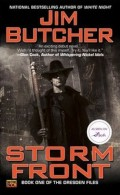
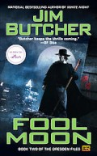
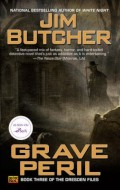
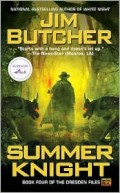
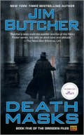

| Jim Butcher Books: Dresden Files | ||
|---|---|---|
| Buy the whole set for just $20.00!!! | ||
| Cover | Description | Price |
|  | Harry Dresden is the best at what he does. Well, technically, he’s the only at what he does. So when the Chicago P.D. has a case that transcends mortal creativity or capability, they come to him for answers. For the “everyday” world is actually full of strange and magical things — and most of them don’t play well with humans. That’s where Harry comes in. Takes a wizard to catch a — well, whatever. There’s just one problem. Business, to put it mildly, stinks. So when the police bring him in to consult on a grisly double murder committed with black magic, Harry’s seeing dollar signs. But where there’s black magic, there’s a black mage behind it. And now that mage knows Harry’s name. And that’s when things start to get… interesting. Magic. It can get a guy killed | $5.00 |
|  | Business has been slow. Okay, business has been dead. And not even of the undead variety. You would think Chicago would have a little more action for the only professional wizard in the phone book. But lately, Harry Dresden hasn’t been able to dredge up any kind of work — magical or mundane. But just when it looks like he can’t afford his next meal, a murder comes along that requires his particular brand of supernatural expertise. A brutally mutilated corpse. Strange-looking paw prints. A full moon. Take three guesses — and the first two don’t count… | $5.00 |
|  | Harry Dresden, Chicago’s only practicing professional wizard, should be happy that business is pretty good for a change. But now he’s getting more than he bargained for. A duel with the Red Court of Vampires’ champion, who must kill Harry to end the war between vampires and wizards… Professional hit men using Harry for target practice… The missing Shroud of Turin… A handless and headless corpse the Chicago police need identified… Not to mention the return of Harry’s ex-girlfriend Susan, who’s still struggling with her semivampiric nature. And who seems to have a new man in her life. Some days, it just doesn’t pay to get out of bed. No matter how much you’re charging. | $5.00 |
|  | Ever since his girlfriend left town to deal with her newly acquired taste for blood, Harry Dresden has been down and out in Chicago. He can’t pay his rent. He’s alienating his friends. He can’t even recall the last time he took a shower. The only professional wizard in the phone book has become a desperate man. And just when it seems things can’t get any worse, in saunters the Winter Queen of Faerie. She has an offer Harry can’t refuse if he wants to free himself of the supernatural hold his faerie godmother has over him — and hopefully end his run of bad luck. All he has to do is find out who murdered the Summer Queen’s right-hand man, the Summer Knight, and clear the Winter Queen’s name. It seems simple enough, but Harry knows better than to get caught in the middle of faerie politics. Until he finds out that the fate of the entire world rests on his solving this case. No pressure or anything… | $5.00 |
|  | Harry Dresden, Chicago’s only practicing professional wizard, should be happy that business is pretty good for a change. But now he’s getting more than he bargained for. A duel with the Red Court of Vampires’ champion, who must kill Harry to end the war between vampires and wizards… Professional hit men using Harry for target practice… The missing Shroud of Turin… A handless and headless corpse the Chicago police need identified… Not to mention the return of Harry’s ex-girlfriend Susan, who’s still struggling with her semivampiric nature. And who seems to have a new man in her life. Some days, it just doesn’t pay to get out of bed. No matter how much you’re charging. | $5.00 |
| Jim Butcher Books: Dresden Files | ||
|---|---|---|
| Buy the whole set for just $20.00!!! | ||
| Cover | Price | |
| Storm Front | ||
| $5.00 | ||
| Harry Dresden is the best at what he does. Well, technically, he’s the only at what he does. So when the Chicago P.D. has a case that transcends mortal creativity or capability, they come to him for answers. For the “everyday” world is actually full of strange and magical things — and most of them don’t play well with humans. That’s where Harry comes in. Takes a wizard to catch a — well, whatever. There’s just one problem. Business, to put it mildly, stinks. So when the police bring him in to consult on a grisly double murder committed with black magic, Harry’s seeing dollar signs. But where there’s black magic, there’s a black mage behind it. And now that mage knows Harry’s name. And that’s when things start to get… interesting. Magic. It can get a guy killed | ||
| Fool Moon | ||
| $5.00 | ||
| Business has been slow. Okay, business has been dead. And not even of the undead variety. You would think Chicago would have a little more action for the only professional wizard in the phone book. But lately, Harry Dresden hasn’t been able to dredge up any kind of work — magical or mundane. But just when it looks like he can’t afford his next meal, a murder comes along that requires his particular brand of supernatural expertise. A brutally mutilated corpse. Strange-looking paw prints. A full moon. Take three guesses — and the first two don’t count… | ||
| Grave Peril | ||
| $5.00 | ||
| Harry Dresden, Chicago’s only practicing professional wizard, should be happy that business is pretty good for a change. But now he’s getting more than he bargained for. A duel with the Red Court of Vampires’ champion, who must kill Harry to end the war between vampires and wizards… Professional hit men using Harry for target practice… The missing Shroud of Turin… A handless and headless corpse the Chicago police need identified… Not to mention the return of Harry’s ex-girlfriend Susan, who’s still struggling with her semivampiric nature. And who seems to have a new man in her life. Some days, it just doesn’t pay to get out of bed. No matter how much you’re charging. | ||
| Summer Knight | ||
| $5.00 | ||
| Ever since his girlfriend left town to deal with her newly acquired taste for blood, Harry Dresden has been down and out in Chicago. He can’t pay his rent. He’s alienating his friends. He can’t even recall the last time he took a shower. The only professional wizard in the phone book has become a desperate man. And just when it seems things can’t get any worse, in saunters the Winter Queen of Faerie. She has an offer Harry can’t refuse if he wants to free himself of the supernatural hold his faerie godmother has over him — and hopefully end his run of bad luck. All he has to do is find out who murdered the Summer Queen’s right-hand man, the Summer Knight, and clear the Winter Queen’s name. It seems simple enough, but Harry knows better than to get caught in the middle of faerie politics. Until he finds out that the fate of the entire world rests on his solving this case. No pressure or anything… | ||
| Death Masks | ||
| $5.00 | ||
| Harry Dresden, Chicago’s only practicing professional wizard, should be happy that business is pretty good for a change. But now he’s getting more than he bargained for. A duel with the Red Court of Vampires’ champion, who must kill Harry to end the war between vampires and wizards… Professional hit men using Harry for target practice… The missing Shroud of Turin… A handless and headless corpse the Chicago police need identified… Not to mention the return of Harry’s ex-girlfriend Susan, who’s still struggling with her semivampiric nature. And who seems to have a new man in her life. Some days, it just doesn’t pay to get out of bed. No matter how much you’re charging. | $5.00 | |